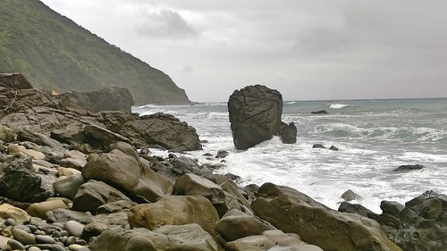
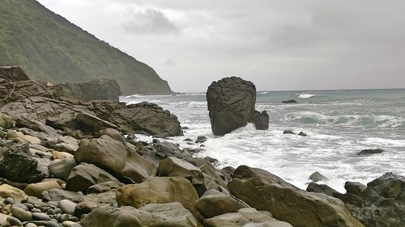

雖然阿朗壹古道在2015年10月起以安全因素暫時封閉臨海路段而沒法走全程, 很美中不足 也知道夏日的阿朗壹海岸才最蔚藍美麗, 冬日得看老天的臉色 但莫名的渴望 就想在這次的環島旅行中踏上聞名很久的阿朗壹 而已過了申請期限的一個月內還可以透過民宿安排到 我願意相信這就是冥冥中有安排…
最後我們的阿朗壹之行 果然老天不賞臉而天灰灰 還因風雨太大 連最原先預期的終(中)點也沒能走到 幸好我們出門在外, 向來安全為重也不怎麼執著 反倒享受了一趟豐富自在的生態教育旅行 更甚挑戰古道的成就
前一晚的大雨讓我們擔心這下怎麼走阿朗壹阿 但連住宿的套裝行程 也只能冒著風雨走一步是一步 謝謝導覽員(鐘明芳老師)載著我們直驅到步道口 從這裡開始徒步進入旭海觀音鼻自然保留區 是的! 要申請與有管制的是觀音鼻自然保護區而不是耳熟的阿朗壹古道 出發前 老師拿出他的開山刀讓愛愛擺出如勇士出征般的POSE照相  然後跟著老師的腳步 進入嚮往很久的阿朗壹
然後跟著老師的腳步 進入嚮往很久的阿朗壹  同之前看過的照片 一樣的礫石灘 一樣的連綿海岸線 但灰濛的天空添了些神祕
同之前看過的照片 一樣的礫石灘 一樣的連綿海岸線 但灰濛的天空添了些神祕  連接台東達仁鄉南田村與屏東牡丹鄉旭海村的阿朗壹 是環台灣公路唯一斷掉的一段 曾經政府要在這開通台26縣道 引起環保團體的抗議後 部分路段納入觀音鼻自然保留區 開發與環境保護之間的爭議一直仍存在著 但這裡保留了完整的海岸原始森林與地質景觀
連接台東達仁鄉南田村與屏東牡丹鄉旭海村的阿朗壹 是環台灣公路唯一斷掉的一段 曾經政府要在這開通台26縣道 引起環保團體的抗議後 部分路段納入觀音鼻自然保留區 開發與環境保護之間的爭議一直仍存在著 但這裡保留了完整的海岸原始森林與地質景觀  是連國外學者都讚嘆不已的大自然教室
是連國外學者都讚嘆不已的大自然教室  好一陣子的壞天氣 讓許多垃圾被海浪拍打上岸
好一陣子的壞天氣 讓許多垃圾被海浪拍打上岸  許許多多來自大陸 日本 甚至韓國的寶特瓶 讓人震撼垃圾的無遠佛屆
許許多多來自大陸 日本 甚至韓國的寶特瓶 讓人震撼垃圾的無遠佛屆  漂的久一點的垃圾竟也成了海洋生物寄生的依賴
漂的久一點的垃圾竟也成了海洋生物寄生的依賴  再看到岸上奄奄一息的小海龜 真的覺得人類對於環境的破壞遠遠超過所獲得 古道的基石早已不可考 路也不是唯一的走法 或臨海的礫石灘或走進林間的小徑 隨導覽員引領串連著 只是天雨泥地不好行 我們只好走其實也不好走的礫石灘
再看到岸上奄奄一息的小海龜 真的覺得人類對於環境的破壞遠遠超過所獲得 古道的基石早已不可考 路也不是唯一的走法 或臨海的礫石灘或走進林間的小徑 隨導覽員引領串連著 只是天雨泥地不好行 我們只好走其實也不好走的礫石灘  南田石很美
南田石很美  走在上頭 喀喀作響
走在上頭 喀喀作響  南田石也圓潤的讓我們讚嘆不已 要經過怎樣的琢磨才能成就一顆顆的雞蛋貌 也經歷多大的風浪才能堆疊出這樣的石頭壩 鐘老師指導我們坐在這 留下難得的回憶
南田石也圓潤的讓我們讚嘆不已 要經過怎樣的琢磨才能成就一顆顆的雞蛋貌 也經歷多大的風浪才能堆疊出這樣的石頭壩 鐘老師指導我們坐在這 留下難得的回憶  天空不作美 但這裡還是好美
天空不作美 但這裡還是好美 
風雨隨著我們的行程與心情一起進入高潮  不好行 但我們跟著老師腳步盡可能地走
不好行 但我們跟著老師腳步盡可能地走  景觀真的很美 只是浪也越拍越猛  安全考量 我們不得不就此打住 休息吃點民宿準備的點心後就返程
景觀真的很美 只是浪也越拍越猛  安全考量 我們不得不就此打住 休息吃點民宿準備的點心後就返程  休息時間 我們又把玩起石頭 真的很像雞蛋阿…
休息時間 我們又把玩起石頭 真的很像雞蛋阿…  鐘老師也熱情回應 解說我們提的各式奇奇怪怪問題 也繼續指導他明顯疼愛的愛愛擺各式照相姿勢
鐘老師也熱情回應 解說我們提的各式奇奇怪怪問題 也繼續指導他明顯疼愛的愛愛擺各式照相姿勢 
 回程風雨漸歇 走來更愜意 映入眼的海岸線又是不一樣的風情
回程風雨漸歇 走來更愜意 映入眼的海岸線又是不一樣的風情  延續昨天在旭海大草原的架式 在這最美麗的海岸線當然也要來一PO 謝謝解說員,鐘老師的帶領 幫我們上了一堂豐富的自然課
延續昨天在旭海大草原的架式 在這最美麗的海岸線當然也要來一PO 謝謝解說員,鐘老師的帶領 幫我們上了一堂豐富的自然課  我一如往常的不貪心 只期望小種子有撒在徹愛的心田裡
我一如往常的不貪心 只期望小種子有撒在徹愛的心田裡  雖然我們的阿朗壹不只沒有全段 連中段的制高點也沒能走到 但我們很開心… 而不管有沒有達陣 一定要在英雄榜前來個讚 留下個到此一遊照嚕
雖然我們的阿朗壹不只沒有全段 連中段的制高點也沒能走到 但我們很開心… 而不管有沒有達陣 一定要在英雄榜前來個讚 留下個到此一遊照嚕  話說 有機會我們好天氣的季節再來走完阿朗壹吧~
話說 有機會我們好天氣的季節再來走完阿朗壹吧~